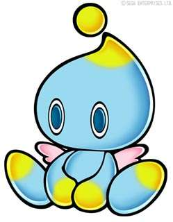
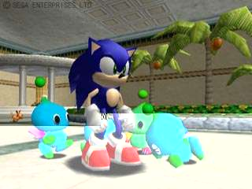
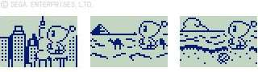

| What is a Chao? | |
| The "A" in A-LIFE stands for ARTIFICIAL in English. This is a new research field that scientists around the world have been working on for about 10 years, trying to reproduce the phenomena unique to life using computers and machines. This time, Chao is the adapation of the A-LIFE theory for games. |
 |
|  | Chaos are mysterious creatures that coexist with humans throughout the Sonic Adventure world. Chao have a tendency to take the skills and physical characteristics of other animals and transform into their own form, so their appearance, personality, and behavior are truly unique. In each Adventure Field of the game, there is a Chao Garden where players can communicate with Chao in various ways to raise them. |
| NiGHTS' A-LIFE has been focused on breeding and change, but this time, A-LIFE Chao aims to go further. The new A-LIFE Chao aims to realize two-way communication with the player character. For example, if they like you enough, they will bring you items and rub up against you. On the other hand, if you are mean to them, you will be abandoned or ignored. In other words, not only does the player do something to A-LIFE, but A-LIFE approaches the player as if it were a living creature with a real will. This is the most important feature of this A-LIFE Chao. |
|
| Visual Memory's first RPG! | |
|  | |
| You can take one of your favorite Chao out of the Dreamcast by placing it in the visual memory. Choose the course you'd like to take, and exchange e-mails with your Chao to reach your goal! You can play against other players, exchange games, and even link up the main unit for even more fun.
| |
|
Sonic Team 1998
| |